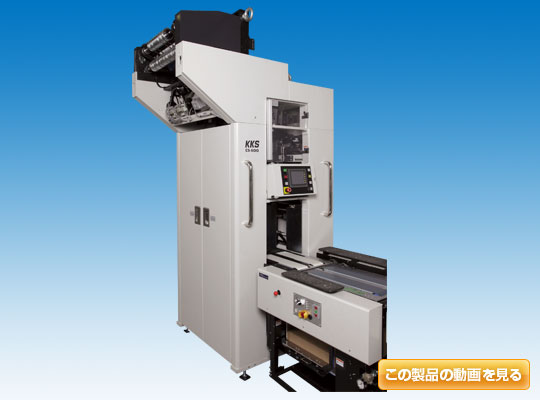
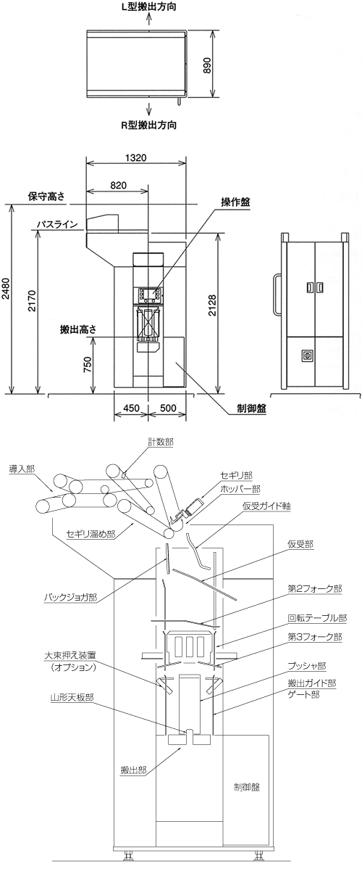

本装置は、輪転機の折機から排出される折目先行の連続紙列が、そのまま紙列搬送キャリアにより送られたものをカウンタースタッカー（CS）導入部にて増速し、これを計数区分し、区分されたバッチを回転テーブルにて交互に180度位相を変えて積み重ね、所定のバッチ数のスタックを作成して機外へ排出する装置です。
高速対応、荷姿良好、静かな動作音、省エネ設計
20万部／時の超高速輪転速度で1バッチ15部の分解処理ができ、48頁の多頁新聞にも対応できます。
また、CS中心からキャリア取合い点までの長さが、従来機に比べ大幅に短縮されたコンパクトタイプです。
性能向上
新型サーボモーターの採用と、制御シーケンスの改良により、20万部／時の超高速度に対応できます。CS単独で15部以上の小端数束の作成が可能です。2頁から48頁までの幅広い建頁に対応できます。小束集積部に仮受けを設けたため、さらに荷姿が良好になりました。回転テーブルの中段設置、搬出ベルトの設置により束作成能力が大幅に向上しました。
静かな動作音
駆動系をチェーンからタイミングベルトに変更し、回転テーブルをACサーボモーター駆動にすることで、一段と静粛性を高めました。
高精度の計数
非接触型レーザーカウンターを採用、高い評価をいただいておりますKKS独自の計数制御方式により、高精度の部数カウントを実現します。
使いやすい全面操作パネル
カラー液晶を採用したタッチパネル式操作表示器を搭載、各部の動作のタイミング設定や、日常作業に必要な操作からトラブル履歴表示にいたるまで、大変見やすく操作も簡単です。
充実した表示機能
計数処理も主制御装置であるPLCで制御する事により、計数に関する調整や計数状況の確認を、画面上から簡単に行う事ができます。直流電源とインバーターのコンデンサ寿命警報表示、主要電装品の故障診断表示等、自己診断機能を更に強化しました。小束部数不一致、その他警告に関する画面表示と履歴表示を充実させました。
端数束作成機能
端数束作成の記憶量は、標準で999個です。端数束部数をテンキーより入力して、記憶させ、必要時にスタートボタンを押すことで、自動的に端数束を作成します。また、下流機器の稼働状況をみて、端数束作成を中断、再開させることもできます。システムによる束作成処理中でも、任意のタイミングで端数束の割り込みが可能です。
| 作動速度 | 最高20万部／時（印刷速度） | ||||||||
|---|---|---|---|---|---|---|---|---|---|
| 処理バッチ | 7100バッチ／時 | ||||||||
| 取扱新聞寸法 | 縦275mm×横410mm | ||||||||
| 取扱新聞ページ数 | 2頁〜48頁 | ||||||||
| 新聞重なりピッチ | 58mm | ||||||||
| スタック束高さ | 総頁3200頁以下 | ||||||||
| 1バッチの部数 | 15部、20部、25部、50部、ランダム（1バッチの高さ195mm以下） | ||||||||
| 搬出高さ | 750mm±20mm | ||||||||
| 束作成能力 （連続作成可能束部数） |
印刷速度 （万部／時） |
20以下 | 19以下 | 18以下 | 17以下 | 16以下 | 15以下 | 14以下 | |
| バッチ数 （バッチ／ スタック） |
1 | 26 | 24 | 23 | 22 | 21 | 19 | 18 | |
| 2 | 28 | 27 | 26 | 24 | 23 | 21 | 20 | ||
| 3 | 53 | 51 | 48 | 45 | 43 | 40 | 37 | ||
| 4 | 56 | 53 | 51 | 48 | 45 | 42 | 39 | ||
| 電源容量 | 3相、AC200／220V、50／60Hz、2.5kVA | ||||||||
| 電動機 | 0.4kW 1台（インフィード駆動用） | ||||||||
| 0.2kW 1台（搬出ベルト駆動用） | |||||||||
| 0.75kW 1台（回転テーブル駆動用サーボモーター） | |||||||||
| 制御盤 | 本体に内蔵 | ||||||||
| 圧縮空気圧 | 0.6MPa以上（機器設定圧0.5MPa） | ||||||||
| 空気消費量 | 0.335m3／min（normal）（25部×4バッチ搬出、印刷速度15万部の時） | ||||||||
| 総質量 | 850kg（制御盤含む） | ||||||||



- CopyRight © KKS,LTD.
株式会社KKS 〒555-0011 大阪市西淀川区竹島4丁目11番54号 TEL：06-6471-7771（代表） FAX：06-6477-5374